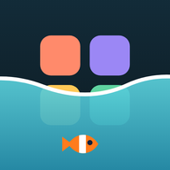

SeaThroughTime’s up?
The sea floods in.
Set limits for the apps you overuse.
For Android · 2 apps free · No account
Get it on Google Play
SeaThroughSet limits for the apps you overuse.
For Android · 2 apps free · No account
Get it on Google Play